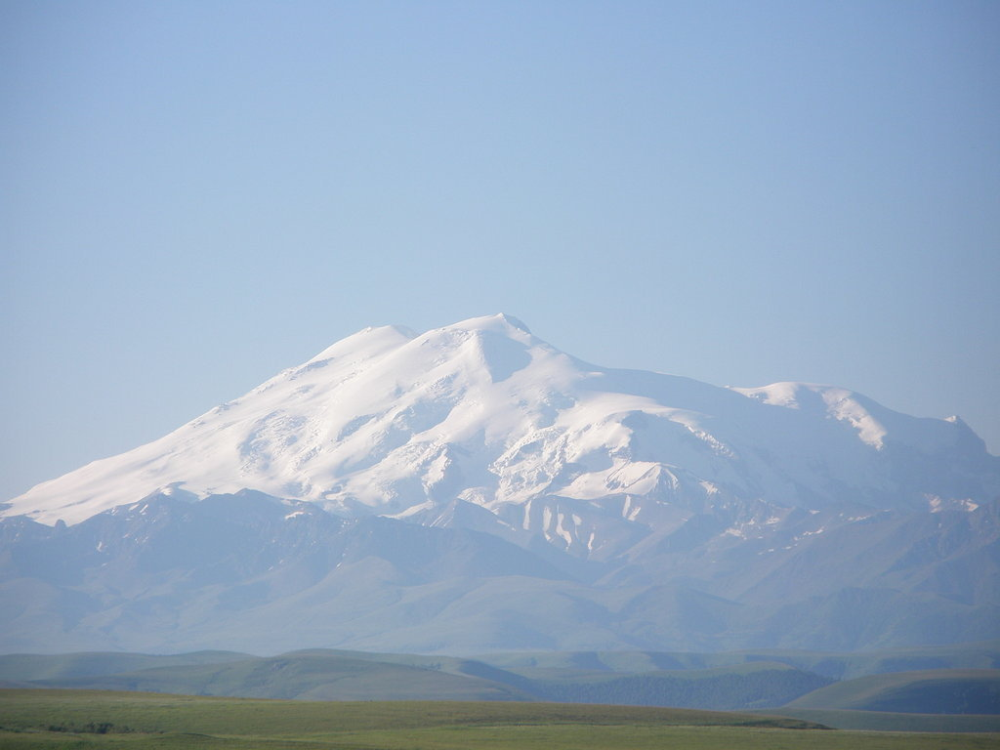
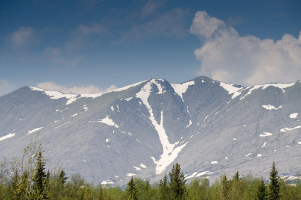
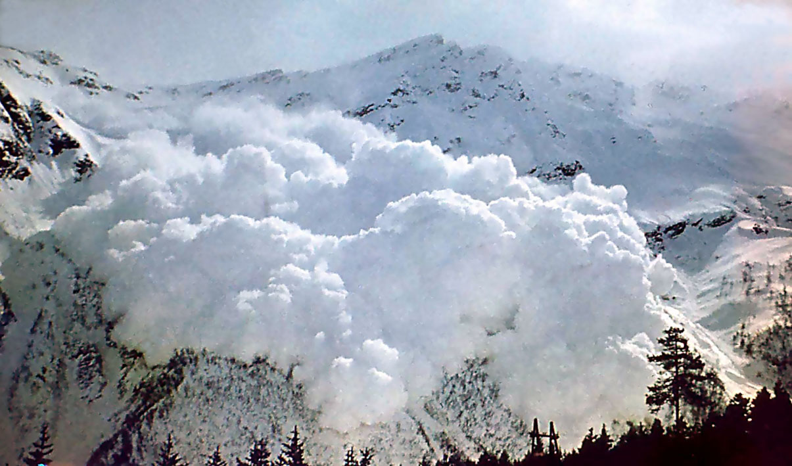
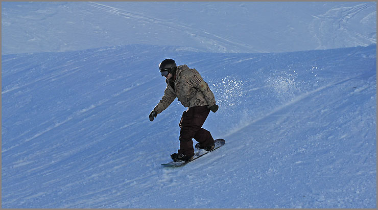
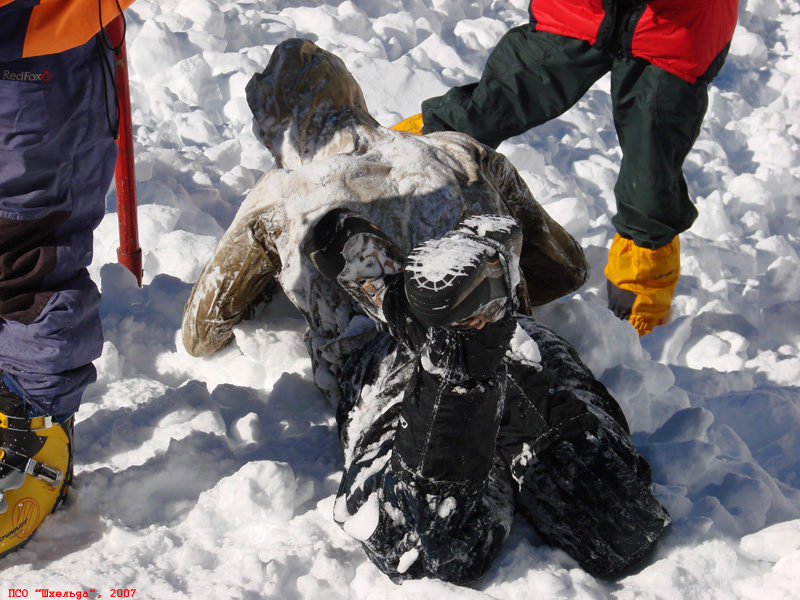
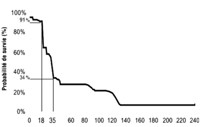

juicy solutions
Программно-аппаратный комплекс для поиска людей, попавших в лавину.
Проблема
Каждый год в горах в результате схода лавин погибает несколько десятков человек.
 Проблема
Каждый год в горах в результате схода лавин погибает несколько десятков человек.
 
Проблема
Чем быстрее будет найден человек, попавший под лавину, тем больше шансов на его спасение.
На графике показана вероятность выживания в зависимости от времени погребения (в минутах)
Что необходимо?
- Очевидно, что для повышения шансов на спасение необходимо минимизировать время, необходимое команде спасателей для поиска пострадавшего.
- Также, необходимо обезопасить насколько это возможно и самих участников спасательной операции.
Формализуем задачу
- Обнаружение пострадавшего должно занимать не более 15 минут;
- Реальное положение пострадавшего должно укладываться в круг радиусом 20 метров;
- Спасательная команда должна иметь карту с отметкой и наиболее безопасным в данных условиях маршрутом;
Предлагаемое решение
Для решения этой задачи мы предлагаем использовать автоматизированный программно-аппаратный комплекс на основе квадрокоптеров.

Почему квадрокоптеры?
- Конструктивно проще самолета или вертолета;
- Обладают высокой маневренностью;
- Дешевы (при серийном производстве ~10 т.р.);
- Времени полета достаточно для обнаружения пострадавшего в радиусе, доступном для спасательной команды
Как это работает?
- Человек, отправляющийся в зону, где существует опасность схода лавины, берет с собой специализированный маячок;
- В момент схода лавины на базе спасателей срабатывает сигнал опасности, по которому запускаются поисковые квадрокоптеры;
Как это работает?
-
В реальном времени на диспетчерском пульте отображаются положения
коптеров и премерное положение маячков, которое уточняется по
мере приближения поисковых машин к нему;
- На планшете поисковой команды отображаются положение назначенного им маячка и кратчайший безопасный маршрут до него.
Наша реализация
- Плата управления
- Arduino Due (ранее — Arduino Uno)
- Акселерометр и гироскоп InvenSense MPU-6050
- Компас Honeywell HMC5883L
- Код на C++


Алгоритм стабилизации
- Управляем второй производной координат и углов \[ \begin{cases} J\ddot{\alpha}=M(t)\\ m\ddot{x}=F(t) \end{cases} \]
- Задаем \( M(t) \) и \( F(t) \) в зависимости от текущего состояния и предыстории
- Одно из решений — ПИД: \( M(t)\mathrel{:}=K_p\cdot\alpha(t)+K_i\cdot\int\limits_0^t\alpha(\tau)d\tau+K_d\cdot\frac{d\alpha}{dt}(t) \)
ПИД-регулятор
Типичный переходный процесс

Датчики
ПИД требует углы (\(\Psi,\,\theta,\,\Phi\))
| Датчик | Измеряет | Можно получить |
|---|---|---|
| MEMS-гироскоп | \(\vec{\omega}\) | \( \theta \) и \( \Phi \) |
| Акселерометр | \(\vec{W}\) | |
| Цифровой компас | \(\vec{B}\) | \(\Psi\) |

Управление
- Пульт ДУ
- ПК связан с коптером по радио (xBee)
- Данные с коптера на ПК (real time)